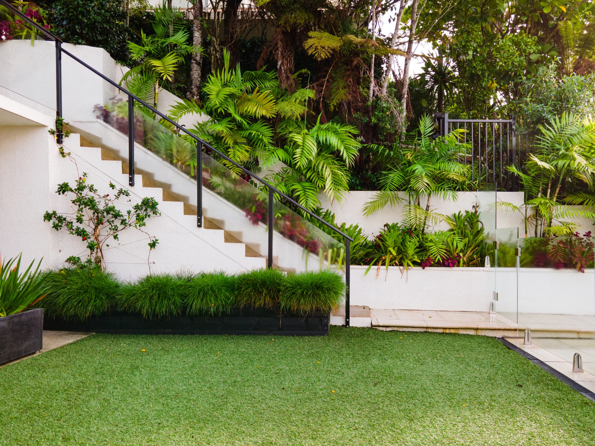

01
Progettazione paesaggistica e su misura
Immaginiamo, disegniamo e realizziamo spazi verdi armoniosi, che rispecchiano l’identità del cliente. Dal giardino privato agli spazi aziendali, ogni progetto nasce da uno studio accurato del contesto e si sviluppa con materiali di qualità e un’estetica contemporanea.
Contattaci